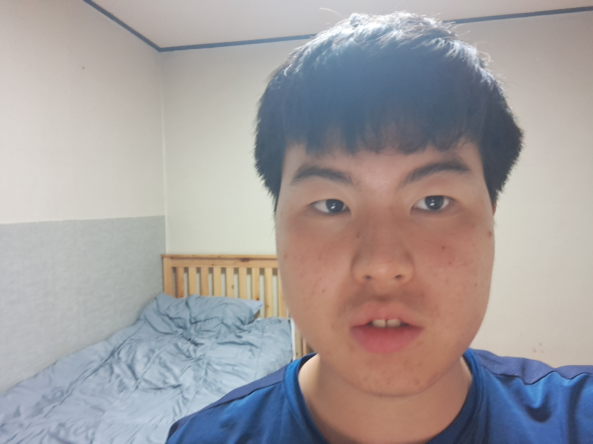

안녕하세요, 저는 강원대학교 컴퓨터공학과 23학번 김도운 입니다. 저는 현재 2학년 입니다.
저는 2003년 12월 1일에 서울 강서구에서 태어났고, 현재 엄마, 아빠, 여동생, 외할머니와 경기도 과천시에 살고 있습니다.
저가 좋아하는 것은 운동, 통계 분석, 보드게임입니다. 운동은 줄넘기, 체조, 스트레칭, 달리기를 주로 하고 있고, 축구, 야구 같은 걸 보는 걸 좋아합니다.
통계 분석은 인터넷에서 다양한 정보를 찾아보고 그 내용을 분석하는 것인데, 예를 들면 축구나 야구 등에 대해 구단별 우승 횟수, 우승 연도, 팀 순위 등을 분석하는 걸 좋아합니다.
최근에는 저출산 추세에 따라 출생아수 통계도 분석하고 있습니다. 보드게임은 돈을 가지고 하는 게임을 좋아합니다.
저의 초능력은 계산입니다. 계산을 누구보다도 잘합니다. 그리고 달력 요일에 대해서도 잘 압니다. 저는 월요일에 태어났습니다.
저의 단점으로는 부조리 한거 입니다. 사람과 대화를 하거나 행동 할 때 눈치가 없고, 사고를 많이 치고, 시끄럽습니다.
저의 특징으로는 초중고를 모두 대안학교로 나왔습니다.
그럼 제 일생에 대해 이야기 해보겠습니다.
태어나서 초등학교 입학전까지
저는 2003년 12월 1일에 서울 강서구 가양동에서 태어났습니다. 태어날 때 몸무게는 3.6kg이었습니다.
어린이집, 유치원 그리고 공동육아 어린이집
2007년 저는 꿈초롱 어린이집을 다녔고, 2008년 2월에 해리 유치원에 갔습니다. 하지만 가서 적응을 못해 한달만에 나왔습니다.
이후 병원과 목동에 있는 치료실에 다니다가, 그해 11월 공동육아 어린이집인 열리는 어린이집을 가게 되면서 경기도 과천으로 이사를 했습니다.
그 후 2010년 2월에 열리는 어린이집을 졸업했습니다.
초등학교
1학년
2010년 3월 저는 무지개학교라는 대안학교로 초등학교를 입학했습니다. 한 학년에 십수명, 전체 80명 정도 되는 학교 였습니다.
일반학교와는 달리 경쟁과 획일된 교육방식을 벗어나 자유롭고 철학 중심의 교육을 합니다.
1학년 때 저는 수학을 유독 잘했습니다. 더하기 빼기 문제를 다른 친구들에 비해 쉽게 풀었습니다. 그러나 언어를 잘 못했고 선생님의 속도 많이 새겼습니다.
2학년
2학년 때도 1학년 떄와 비슷했습니다. 그러나 저는 2학년 여름방학 때 큰 사고를 당했습니다.
친구들과 물놀이를 하러 갔다가 횡단보도를 건너다 트럭에 치였습니다. 죽을 뻔 했습니다. 다행히 구급차가 빨리 와 병원에 갔고 치료를 잘 받아 괜찮아졌습니다.
2학년 가을에는 지리산 둘레길로 성장여행을 떠나는데 많이 걸어서 힘들었지만, 마지막 날 밤에 파티해서 좋았습니다.
3학년
3학년부터 6학년까지 옷, 집, 밥이라는 3개의 살림반으로 나뉘어 살림수업을 진행하는데, 저는 3학년 때 집살림에 들어가 건축이라는 주제를 배우게 됐습니다.
건물, 빌딩, 건축가에 대해 알게 되었고, 2학기 때는 서울에 있는 건물들을 모형으로 만들었습니다.
63빌딩, 남산타워, 숭례문 같은 걸요. 저는 이 때가 가장 좋았습니다.
4학년
4학년 때도 집살림을 했습니다. 하지만 집살림에 4학년이 저 혼자여서 힘들었습니다. 그러나 주제는 목조주택 만들기라 괜찮았습니다.
목조주택 모형을 만드는게 참 재미있었습니다. 목조주택 구조를 알게 된 것도 좋았습니다.
5학년
5학년 때도 집살림을 했는데, 주제는 흙집을 짓는거 였습니다.
매달 일주일씩 정선으로 여행을 떠나 흙집을 지었습니다. 흙부대를 가지고 지었습니다. 그러나 조금 힘들었습니다.
11월에는 성장여행으로 지리산 종주를 했는데 힘들었지만 천왕봉 일출도 보고, 마지막 날 맛있는 것도 먹어서 좋았습니다.
6학년
6학년 때도 집살림을 했습니다. 주제는 학교 앞 마당을 새롭게 꾸미는 거 였습니다.
1학기 때는 울타리를 새로 바꾸는 작업을 했고, 2학기 때는 졸업생 타일을 붙였습니다.
저희 학교는 졸업 프로젝트가 있었는데 4학년 때 목조주택 만들었던게 좋아 또 다시 목조주택을 만들었습니다. 하지만 예산이 부족해 어려움이 많았습니다.
중, 고등학교
중1
2016년 2월 초등 무지개학교를 졸업하고 중등 무지개학교를 들어갔습니다.
이 해에는 적정기술에 대해 배웠습니다. 간이 정수기, 화덕 같은 것을 만들었습니다.
이 때 키도 150이 되지 않고, 모자른게 많아 친구들과 형들이 놀려서 힘들고 죽고 싶었습니다. 그래도 시간 지나니 괜찮아졌습니다.
중2
이 때는 일상의 전환이라는 걸 배웠는데, 텃밭을 하고 에너지에 대해 배웠습니다.
이 때 원자력발전소에 대해 배운게 재밌었습니다. 원자력 발전이 방사능을 유출하다고 하니 빨리 탈핵을 했으면 좋겠다는 생각이 들었습니다.
전환도시 설계도 하였습니다. 그곳은 재생에너지를 사용하고 친환경적인 도시입니다.
중3
이 때는 요리를 했습니다. 맛있는 거도 많이 먹어서 좋았습니다.
직접 맛집도 가보고, 장사도 해봤습니다.
이 때 고등학교도 무지개에서 계속 다니기로 결정했습니다.
고1
이 때는 음악을 주제로 했습니다. 음악에 대해 관심이 생기기 시작했습니다.
녹음도 하고, 앨범도 만들었습니다. 앨범을 만들기 위해 사진을 찍은 게 좋았습니다.
이 때 진로를 대학에 가기로 결정했습니다.
고2
코로나로 인해 5월까지 학교에 가지 못했습니다. 이 때는 기획의 시간이라는 걸 하는데 저는 건축이라는 주제로 했습니다.
건축가 포스터도 만들고, 건축책도 읽고, 건물 도면도 보고 했습니다. 그리고 저만의 도면을 그렸습니다.
저만의 도면을 그릴 때는 우여곡절이 많았습니다. 진짜 설계를 하니까 고쳐야 할 부분이 많고 시간이 많이 걸렸습니다.
교육과정이 변경되어 고2를 끝으로 무지개학교를 졸업했습니다.
고3
고3 때는 학원을 다니며 입시준비를 했습니다. 첫 수능은 괜찮게 봤지만, 높은 대학을 가고 싶었고, 수시에서 떨어져서 재수를 하기로 결정했습니다.
성인
재수
재수를 시작할 때는 서울에 상위권 대학을 갈 줄 알았습니다. 그러나 성적이 오르지 않았고 그렇게 해서 강원대를 오게 됐습니다.
이 때 시험을 망쳐 건물 옥상에 올라가 자살시도까지 했었는데 카타르 월드컵을 보고나니 기분이 풀렸습니다.
카타르 월드컵은 정말 재밌었습니다. 한국이 극적으로 16강에 오르고, 메시의 아르헨티나가 우승했기 때문입니다.
대학교 1학년
그리고 강원대 컴퓨터공학과 23학번으로 입학했습니다. 첫 학기에 자바를 배웠는데 너무 어려웠습니다. 과제를 잘 수행해내지 못햇습니다.
그래도 꾸준히 하니까 점점 나아졌습니다. 2학기 때는 c언어도 배웠는데 c언어는 너무 어려웠습니다.
그래도 하다보니 재미가 생겼습니다.
현재
지금은 2학년이고, 리눅스, 웹, 파이썬, 자료구조, 논리회로를 배우고 있습니다. 어렵지만 재밌는 거 같습니다.
앞으로의 계획
저는 빅 데이터 분석을 하고 싶습니다. 그 이유는 분석 하는게 재밌고 적성에 잘 맞기 때문입니다.
각종 통계를 분석하고 싶습니다. 숫자, 그래프, 도표 같은 걸로 정리하면 재밌을 거 같아서 입니다.
저는 부자가 되고 싶습니다. 부자가 되어 고급 레스토랑에서 밥을 먹고, 비행기 일등석 타고, 고급 호텔에서 자는 걸 생각하면 너무 좋을 거 같습니다.
또 고급 주택에서 살고, 슈퍼카를 타고 다니고 한다면 계속 행복할 거 같네요.
또 이루고 싶은 것은 키의 대한 혁명입니다. 생각이 현실이 된다라는 얘기가 있고, 의학과 과학은 발견되지 못한게 많습니다.
모든 나이대에서 노력하면 키가 자랄 수 있는 세상을 만들고 싶습니다. 저도 185까지 크고 싶습니다. 모든 사람이 그렇게 될 수 있게 하고 싶습니다.
그렇게 해서 키 관련한 걸 하고 싶습니다.
이를 바탕으로 해 성공해서 돈을 많이 버는 게 꿈입니다.
그리고 결혼을 해서 아이를 3명 낳고 좋은 가정을 꾸리고 싶습니다.
가족들끼리 지내는 모습을 보면 기분이 좋아 보이기 때문입니다.
또한 건강하게 오래살고 싶습니다.
제가 상상한 미래는 다음과 같습니다.
20대
상상과 노력으로 의학의 한계를 깨고 키가 185까지 큰다.
병역을 해결하고, 대학을 졸업한다.
졸업을 하고 IT기업에 데이터 관련 직종으로 취업한다. 데이터에 대해 분석하는 일을 한다. 그와 동시에 퇴근 후나 주말에 키에 대해 연구한다.
30대
30살에 결혼을 한다. 그 후 2년 정도 주기로 아이를 3명 낳는다.
빅 데이터 전문가가 된다. 그리고 모든 나이대에서 키가 클 수 있는 방법을 알려준다.
실력을 쌓으면 창업을 한다.
50대
40대에는 IT기업의 사장이 되고, 키 관련 센터를 만든다.
이렇게 해서 돈을 많이 벌어 고급주택과 고급 외제차를 산다.
이렇게 호화로운 삶을 산다.
50대
50대에는 기업을 다국적 기업으로 확장시킨다.
키 관련 센터도 전국에 여러개 둔다.
그렇게 억만장자가 된다.
60대
60대에는 춘천 외곽에 신도시를 만든다.
그 곳은 데이터 관련 산업과 키 관련 산업을 하는 곳 이다.
그렇게 해서 춘천을 확장 시킨다.
70대
넓은 땅을 사서 그곳에 집을 짓고 자연적인 공간에서 산다.
그 곳에서 자연에 대한 연구를 한다.
80대
기업을 자식에게 물려주고, 환경 운동을 한다.
춘천을 친환경 도시로 만든다.
90대
계속해서 환경 운동을 한다.
나의 인생에 대해 책을 쓴다.
100세이상
100살 잔치를 하고, 남은 여생을 보낸다.